文字
背景
行間


SGH活動報告
明治大学学生とオンライン交流会


SGH国内グローバル研修（英語オンライン研修）
１日目：SDG's概要、Zero Hunger（飢餓撲滅）、Food & Energy（食べ物の在り方、再エネルギーについて）
２日目：Speech Practice（スピーチ発表練習）、Speech Skills（良いスピーチのコツ、各自の発表 Ｑ＆Ａ）
２日目のスピーチでは、SDG's目標から、各自が選んだものについて「何が問題なのか」、「どうしたら少しでも解決に向かうのか」、「今できることは何か」などを発表しました。参加者はみんな1日目に習ったことや学校の授業で扱った内容、調べたデータや自分の考えを盛り込んでおり、声量やジェスチャー、アイコンタクトなどにも気を遣った良い発表ができました。


東京大学学生とオンライン交流会開催
22日（火）、東京大学学生との「知的対話」イベントが、オンラインで開催されました。本校からは、1・2学年の各クラス代表1名＆生徒会役員の計17名が参加しました。東京大学からは3年（医学部）、3年（農学部）、2年（文Ⅰ）、2年（文Ⅱ）、1年（理Ⅰ）とバラエティーに富んだ5名の学生が参加しました。
前半は、本校生徒が各自1問ずつ、東大生に質問や悩みをぶつけ、助言をいただきました。
後半は、3グループに分かれ、「同調圧力」「オンライン」「判断基準」のテーマでディスカッションを行いました。2時間余の計画でしたが、会話が盛り上がり、3時間を超えるイベントとなりました。「知的対話」の楽しさを十分感じられる濃密な時間となりました。

千葉大学環境ISO学生委員会とオンライン交流
9月3日（木）、5日（土）の両日、本校１・２年生と千葉大学環境ISO学生委員会の皆さんとの間で、Zoomを使い、オンライン交流が実現しました。本校の参加生徒は環境問題とオンライン教育を研究テーマとする研究班８班で、節水や木材の有効利用、プラスチックゴミ削減や空き缶のポイ捨て解決、オンライン教育の高校・大学の比較などのテーマで発表を行い、大学生の皆さんから適格かつ建設的な助言をいただきました。また課題研究に取り掛かったばかりの１年生は、環境をテーマとする自由な討議をおこない、大きな刺激を得ることができました。


Sakura High School SGH Presentation
8月24日(月)、2年生の課題研究英語発表班80名が、Sakura High School SGH Presentations を開催しました。課題研究の年間スケジュールにおいては中間発表という段階で、夏休みの研究調査を英文スライドでまとめ、7分間の英語スピーチで伝えました。今回の特徴はアドバイザーとして3名の東京大学留学生がオンラインで参加してくださった点です。2人は国内から、1人は帰国中の香港から生徒にアドバイスをくださいました。TV会議システムを利用し、ライブで留学生に配信し、プレゼンテーションもアドバイスも80名の生徒で共有しました。また対面ゲストとして県内で活躍するALTの協力もいただき、刺激的な発表会を開催することが出来ました。コロナ禍により対面での外部交流が困難な中、本校はオンライン交流の実績を着実に積み上げてきました。今回、研究発表会のライブ中継を経験したことにより、秋冬のオンライン発表会に向けて着実な成長を遂げることができました。
Topic | |
1 | Welcome to Sakura |
2 | Revival of the Shopping Street |
3 | Increase the Voting Rate among the Young |
4 | Salt & Vinegar |
5 | Help Mark |
6 | Emerging Infectious Diseases and Climate Change |
7 | Promoting Tourism in Sakura |
8 | No More Bullying on the Internet |


佐倉市風見鶏の里を訪問
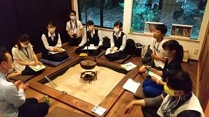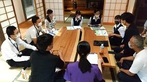
 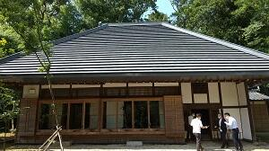
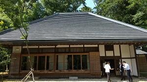 SGH全国事務説明会オンライン開催
 ７月２９日（水）、SGH全国事務説明会がオンラインで開催されました。この場において、本校のSGH事業の実施状況を、全国の指定校を代表し発表する機会を得ました。今回強調した点は、コロナ禍においてもGoogle classroomを使い進化を続けた課題研究の取り組みです。本校は休校中も多くの教科が動画や課題の配信を実施し、県下有数のオンライン教育を実現しました。課題研究ではそのノウハウを更に発展させ、オンライン上で生徒同士が情報をやり取りし学びを続けています。夏休みには本格的な調査に入ります。対面でのインタビューなどは制約がありますが、文献調査を中心に、可能な範囲で研究を進めます。保護者や卒業生の皆様には、これまで以上にご協力をいただく場面が増えると思いますが、よろしくお願いします。
７月２９日（水）、SGH全国事務説明会がオンラインで開催されました。この場において、本校のSGH事業の実施状況を、全国の指定校を代表し発表する機会を得ました。今回強調した点は、コロナ禍においてもGoogle classroomを使い進化を続けた課題研究の取り組みです。本校は休校中も多くの教科が動画や課題の配信を実施し、県下有数のオンライン教育を実現しました。課題研究ではそのノウハウを更に発展させ、オンライン上で生徒同士が情報をやり取りし学びを続けています。夏休みには本格的な調査に入ります。対面でのインタビューなどは制約がありますが、文献調査を中心に、可能な範囲で研究を進めます。保護者や卒業生の皆様には、これまで以上にご協力をいただく場面が増えると思いますが、よろしくお願いします。 浦和第一女子高校とオンライン交流会
 7月26日(日)、浦和第一女子高校と２回目のオンライン交流会を実施しました。コロナ禍の中でも課題研究の歩みを止めぬよう、オンライン上で「知的対話」を実践し、互いに刺激と学びを得ようという試みです。
7月26日(日)、浦和第一女子高校と２回目のオンライン交流会を実施しました。コロナ禍の中でも課題研究の歩みを止めぬよう、オンライン上で「知的対話」を実践し、互いに刺激と学びを得ようという試みです。先月の第１回のテーマは『オンライン教育』
今回のテーマは『地域活性化』と『環境問題』の２本立てで行いました。
テーマごとに、各校３～４名の参加者を集い、自らの課題研究とリンクさせながら、情報交換と質疑を行います。生徒たちの多くは自宅から参加し、時間と距離の壁を越えた思考と対話が実現しました。今後は、課題研究のオンライン発表も構想しています。
７０の研究班が研究テーマをプレゼン（２学年）


１学年研究テーマ検討中
１学年「１分間スピーチ」全生徒が興味・関心に応じた研究テーマを発表しました。
２学年「研究計画作成」各班が今後の研究計画を立て、具体的な調査・研究に入ります。
３学年「課題研究報告書」３年間の研究の総まとめが完成しました。
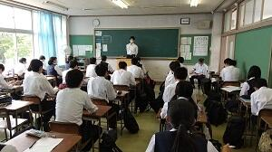


SGH・課題研究進行中
久しぶりのHP更新になりますが、コロナ禍においてもオンラインを活用し、課題研究は着実に進展しています。
３学年：休業中にオンラインでデータをやりとりし、課題研究報告書の提出がほぼ完了しています。
２学年：５月上旬、研究班が再始動し、研究テーマの再設定を実施しました。
１学年：休業中に、オンラインでガイダンスを実施。現在も動画配信とGoogleスライドを組み合わせて探究の手法を学習中。
現在、探究学習はすべてGoogle classroomを通じて情報提供しています。一例として、本日の授業案内を掲載します。

デュッセルドルフ大学生来校


国際研究発表会


１学年クラス交流ポスター発表会
 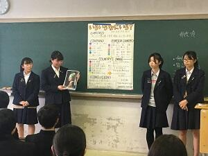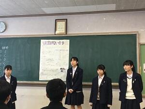
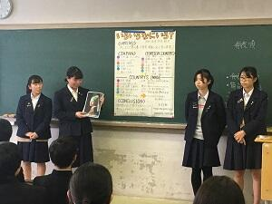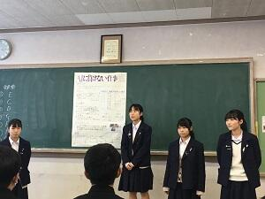
ＳＧＨ課題研究「互いの研究を深め合う発表会」


 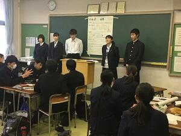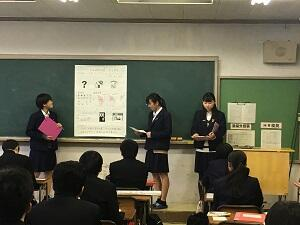
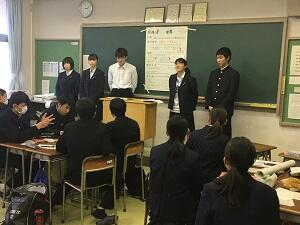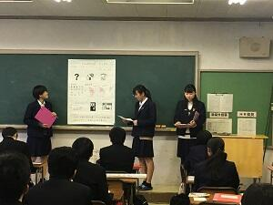

GLアクテイブ講座『ビジネスモデルを学ぼう』
1月9日（木）、GLアクテイブ講座『世界の市場を視野に入れたビジネスモデルについて学ぼう』が、本校で開催されました。講師にグローバルなビジネスを展開なさってる寒郡茂樹さんをお招きし、講演と熱心な質疑応答がおこなわれました。ドイツ文化、デュッセルドルフの街並み紹介に始まり、「ボンサイ」を主にしたビジネス展開、起業の魅力など、経験者でしか感じとることができない生の声を生徒に伝えていただきました。


SGHオランダ海外研修報告会
 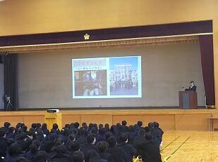
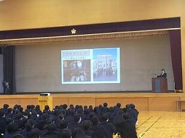
全国高校生フォーラム2019


第4回 関東・甲信越静地区高校生探究学習発表会


マレーシア学校との交流会